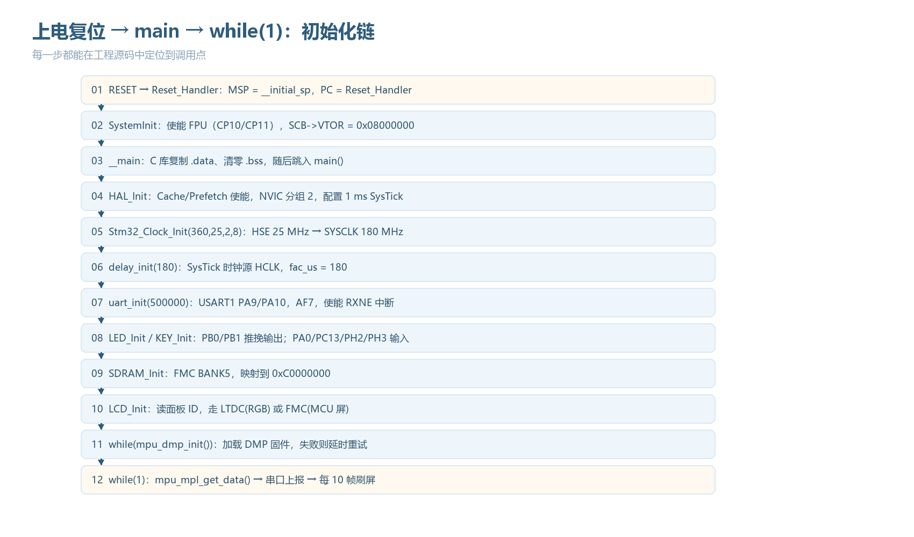
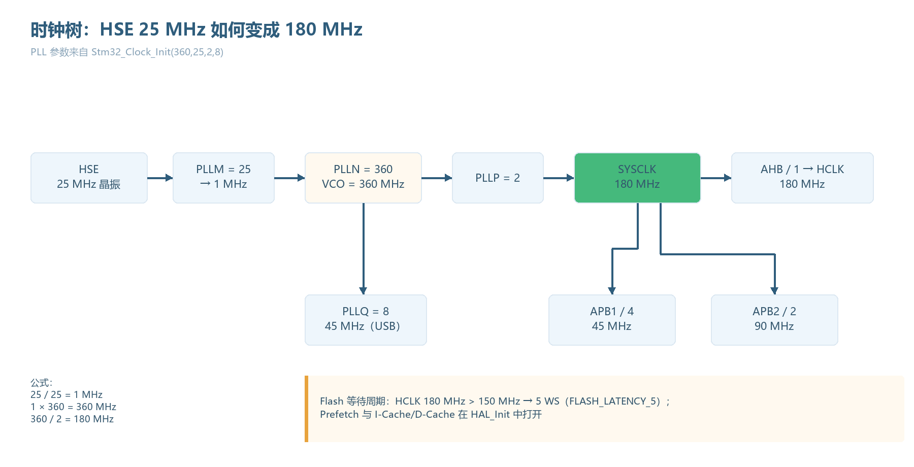
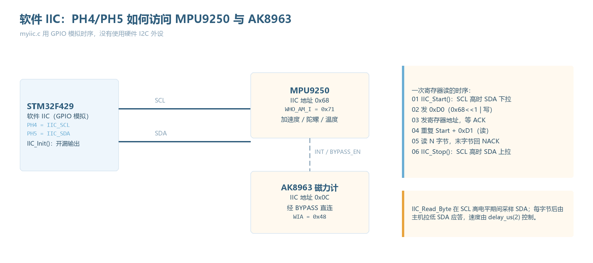
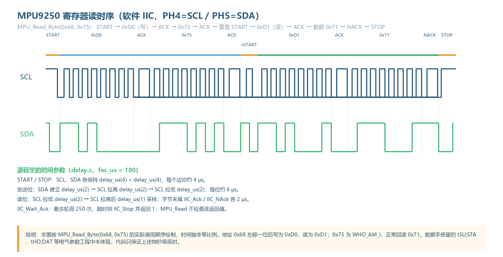
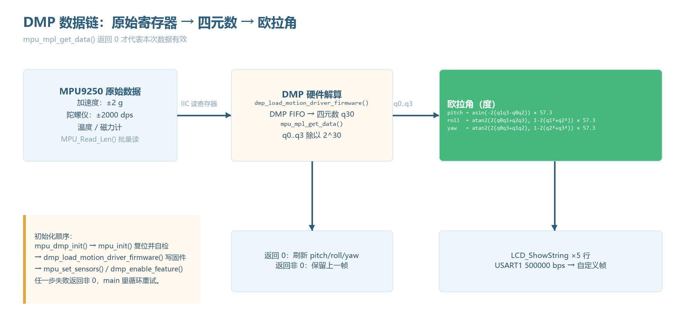
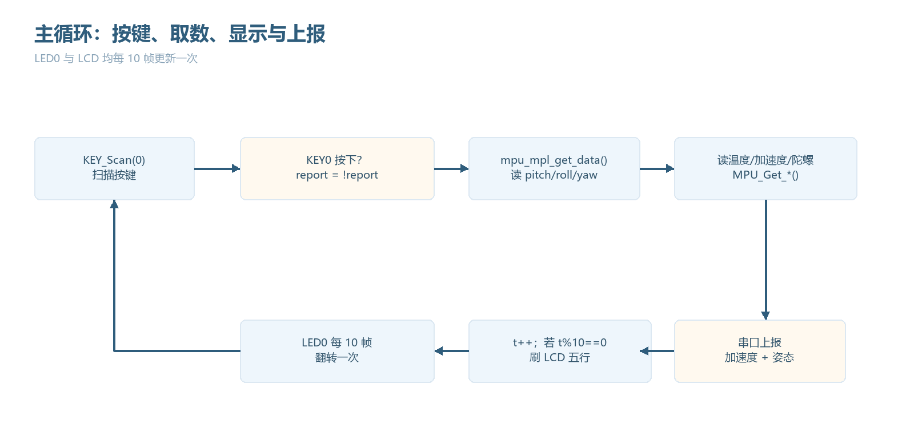

01 实验目标与硬件资源
本实验的目标不是“点亮某个外设”，而是把一颗九轴传感器从复位、自检、量程配置，一路带到可用的欧拉角。工程使用 ALIENTEK 阿波罗 STM32F429 开发板，MPU9250 通过板载 IIC 总线连接，代码里没有使用 STM32 的硬件 I2C 外设，而是用 GPIO 模拟时序。
| 资源 | 工程中的落点 | 作用 |
|---|---|---|
| MCU | STM32F429IGT6，SYSCLK 180 MHz | 运行 DMP 解算与显示刷新 |
| 传感器 | MPU9250（三轴加速度 + 三轴陀螺 + AK8963 三轴磁力计） | 输出原始数据与四元数 |
| IIC | PH4 = SCL、PH5 = SDA | 软件模拟 IIC，地址 0x68 / 0x0C |
| 显示 | SDRAM + LCD（LTDC 或 FMC 屏） | 显示温度、姿态与上传开关 |
| 串口 | USART1，PA9/PA10，500000 bps | 上报匿名协议数据帧 |
| 按键 / LED | KEY0 切换上报，LED0 心跳 | 交互与状态指示 |
02 目录与文件分工
| 目录 / 文件 | 关键函数 | 在本实验中的职责 |
|---|---|---|
USER/main.c | main() | 初始化顺序、DMP 自检循环、主循环取数与显示 |
USER/stm32f4xx_it.c | SysTick_Handler() | 只做 HAL_IncTick()，没有传感器中断 |
CORE/startup_stm32f429xx.s | Reset_Handler | 建立栈堆、取复位向量、跳 SystemInit / __main |
USER/system_stm32f4xx.c | SystemInit() | 开 FPU、设置 VTOR |
SYSTEM/sys/sys.c | Stm32_Clock_Init() | HSE 25 MHz → PLL → 180 MHz |
SYSTEM/delay/delay.c | delay_init/us/ms | SysTick 轮询延时 |
SYSTEM/usart/usart.c | uart_init、fputc | 500000 bps，printf 重定向 |
HARDWARE/IIC/myiic.c | IIC_Start/Stop/Read_Byte | GPIO 模拟 IIC 时序 |
HARDWARE/MPU9250/mpu9250.c | MPU9250_Init、MPU_Get_* | 寄存器级初始化与原始数据读取 |
DMP/driver/eMPL/inv_mpu.c | mpu_dmp_init、mpu_mpl_get_data | 加载 DMP 固件并输出四元数 |
HARDWARE/SDRAM、LCD、LED、KEY | 各自 *_Init() | 帧缓存、显示、心跳与按键 |
main.c → sys.c → delay.c → usart.c → myiic.c → mpu9250.c → inv_mpu.c。先看调用关系，再钻进寄存器细节，避免一上来就被 DMP 的大文件淹没。03 启动流程总览

main() 的前 6 行是全工程的骨架：没有 HAL_Init() 就没有 SysTick 与优先级分组；没有 Stm32_Clock_Init()，后面所有基于 180 MHz 计算的分频都会偏；没有 delay_init(180)，IIC 的微秒延时和 DMP 的重试节奏都会失真。
int main(void)
{
u8 t=0,report=1; // 默认开启上报
u8 key;
float pitch,roll,yaw; // 欧拉角
short aacx,aacy,aacz; // 加速度原始值
short gyrox,gyroy,gyroz; // 陀螺原始值
short temp; // 温度
HAL_Init(); // HAL 初始化：Cache、NVIC 分组、1 ms SysTick
Stm32_Clock_Init(360,25,2,8); // 系统时钟 180 MHz
delay_init(180); // 延时函数按 180 MHz 校准
uart_init(500000); // USART1，500000 bps
LED_Init(); // LED0 / LED1
KEY_Init(); // WKUP / KEY0 / KEY1 / KEY2
SDRAM_Init(); // 外部 SDRAM，LCD 帧缓存
LCD_Init(); // 根据面板 ID 选择 LTDC 或 FMC
POINT_COLOR=RED;
LCD_ShowString(30,50,200,16,16,"Apollo STM32F4/F7");
LCD_ShowString(30,70,200,16,16,"MPU9250 TEST");
while(mpu_dmp_init()) // 失败就重试，直到 DMP 就绪
{
LCD_ShowString(30,130,200,16,16,"MPU9250 Error");
delay_ms(200);
LCD_Fill(30,130,239,130+16,WHITE);
delay_ms(200);
LED0=!LED0; // 失败时 LED0 闪烁
}
LCD_ShowString(30,130,200,16,16,"MPU9250 OK");
...
}
- 顺序不可交换：
delay_init依赖Stm32_Clock_Init之后的 180 MHz；mpu_dmp_init内部的 IIC 时序又依赖delay_us。 while(mpu_dmp_init())把“失败重试”写在主流程里，失败期间 LCD 会先显示 Error，再清屏，形成可见的闪烁。- 只有 DMP 初始化返回 0，才会打印 “MPU9250 OK” 并进入主循环；否则程序永远停在这个重试循环。
- 所有外设初始化都在进入
while(1)之前完成，主循环里不再做时钟或总线配置。
04 启动文件与向量表
启动文件 CORE/startup_stm32f429xx.s 定义了栈区、堆区和向量表。复位时 Cortex-M4 硬件自动从地址 0x08000000 取第一个字作为 MSP，第二个字作为 Reset_Handler 入口。
Stack_Size EQU 0x00000400 // 栈 1 KB AREA STACK, NOINIT, READWRITE, ALIGN=3 Stack_Mem SPACE Stack_Size __initial_sp Heap_Size EQU 0x00000200 // 堆 512 B AREA HEAP, NOINIT, READWRITE, ALIGN=3 __heap_base Heap_Mem SPACE Heap_Size __heap_limit PRESERVE8 THUMB AREA RESET, DATA, READONLY EXPORT __Vectors __Vectors DCD __initial_sp // 第 0 项：初始 MSP DCD Reset_Handler // 第 1 项：复位入口 DCD NMI_Handler DCD HardFault_Handler ...
Reset_Handler PROC
EXPORT Reset_Handler [WEAK]
IMPORT SystemInit
IMPORT __main
LDR R0, =SystemInit
BLX R0 // 先跑 SystemInit
LDR R0, =__main
BX R0 // 再交给 C 库启动代码
ENDP
- 栈只有 1 KB、堆只有 512 B。DMP 解算与浮点打印会消耗较多栈空间，这是本工程最容易被忽视的余量点。
__main不是main：它负责把 .data 从 Flash 复制到 SRAM、把 .bss 清零，然后才跳main()。- 向量表默认链接在 0x08000000；只要不改
VECT_TAB_OFFSET，SystemInit就会把 VTOR 指回这里。 - 启动文件里的
IMPORT SystemInit与IMPORT __main决定了执行顺序，不能在汇编里直接跳main。
05 SystemInit 与 HAL_Init
SystemInit() 在 USER/system_stm32f4xx.c 中。它不做 PLL 配置，真正的 180 MHz 在 Stm32_Clock_Init() 里完成。它做的是三件底层事：打开 FPU、设置向量表偏移、给出复位后的 SystemCoreClock 初值。
void SystemInit(void)
{
RCC->CR |= (uint32_t)0x00000001; // 打开 HSI
RCC->CFGR = 0x00000000;
RCC->CR &= ~(uint32_t)0x01000000; // 关闭 PLL
...
SCB->CPACR |= ((3UL << 10*2) | (3UL << 11*2)); // CP10/CP11 全访问，开 FPU
#ifdef VECT_TAB_SRAM
SCB->VTOR = SRAM_BASE | VECT_TAB_OFFSET;
#else
SCB->VTOR = FLASH_BASE | VECT_TAB_OFFSET; // 默认 0x08000000
#endif
}
HAL_Init() 位于 HAL 库，工程没有重写它。它先打开指令/数据 Cache 和 Prefetch，再设置 NVIC 优先级分组为 2，最后调用 HAL_InitTick() 配置 1 ms SysTick。
HAL_StatusTypeDef HAL_Init(void)
{
__HAL_FLASH_INSTRUCTION_CACHE_ENABLE(); // I-Cache
__HAL_FLASH_DATA_CACHE_ENABLE(); // D-Cache
__HAL_FLASH_PREFETCH_BUFFER_ENABLE(); // Prefetch
HAL_NVIC_SetPriorityGrouping(NVIC_PRIORITYGROUP_2);
HAL_InitTick(TICK_INT_PRIORITY); // TICK_INT_PRIORITY = 0x0F
return HAL_OK;
}
SystemInit里的SCB->VTOR与启动文件配合：只要程序从 0x08000000 起链接，向量表就无需搬移。- FPU 必须在任何浮点运算之前打开；DMP 与欧拉角公式大量使用
float/double，这一步漏掉会直接进 HardFault。 HAL_InitTick()先按复位默认的 16 MHz 配一次 SysTick；随后HAL_RCC_ClockConfig()会再次调用它，按 180 MHz 重装 LOAD。- 优先级分组 2 表示 2 位抢占优先级、2 位子优先级，后续 USART1 中断的优先级都按这个分组解释。
06 时钟、延时与串口

void Stm32_Clock_Init(u32 plln,u32 pllm,u32 pllp,u32 pllq)
{
HAL_Init(); // 确保 HAL 时基已建立
RCC_OscInitStruct.OscillatorType = RCC_OSCILLATORTYPE_HSE;
RCC_OscInitStruct.HSEState = RCC_HSE_ON; // 25 MHz 外部晶振
RCC_OscInitStruct.PLL.PLLState = RCC_PLL_ON;
RCC_OscInitStruct.PLL.PLLSource = RCC_PLLSOURCE_HSE;
RCC_OscInitStruct.PLL.PLLM = pllm; // 25
RCC_OscInitStruct.PLL.PLLN = plln; // 360
RCC_OscInitStruct.PLL.PLLP = pllp; // 2
RCC_OscInitStruct.PLL.PLLQ = pllq; // 8
HAL_RCC_OscConfig(&RCC_OscInitStruct);
RCC_ClkInitStruct.ClockType = RCC_CLOCKTYPE_HCLK|RCC_CLOCKTYPE_SYSCLK
|RCC_CLOCKTYPE_PCLK1|RCC_CLOCKTYPE_PCLK2;
RCC_ClkInitStruct.SYSCLKSource = RCC_SYSCLKSOURCE_PLLCLK;
RCC_ClkInitStruct.AHBCLKDivider = RCC_SYSCLK_DIV1; // HCLK 180 MHz
RCC_ClkInitStruct.APB1CLKDivider = RCC_HCLK_DIV4; // PCLK1 45 MHz
RCC_ClkInitStruct.APB2CLKDivider = RCC_HCLK_DIV2; // PCLK2 90 MHz
HAL_RCC_ClockConfig(&RCC_ClkInitStruct, FLASH_LATENCY_5);
}
| 量 | 算式 | 结果 |
|---|---|---|
| VCO 输入 | HSE / PLLM = 25 / 25 | 1 MHz |
| VCO 输出 | 1 MHz × PLLN = 1 × 360 | 360 MHz |
| SYSCLK | 360 / PLLP = 360 / 2 | 180 MHz |
| HCLK | SYSCLK / AHB 1 | 180 MHz |
| PCLK1 | 180 / 4 | 45 MHz |
| PCLK2 | 180 / 2 | 90 MHz |
| USB 时钟 | 360 / PLLQ = 360 / 8 | 45 MHz |
延时没有使用 HAL_Delay，而是 SYSTEM/delay/delay.c 里的 SysTick 轮询版本。delay_init(180) 把 fac_us 设为 180，delay_us(nus) 直接按 CPU 周期数装载 SysTick 并等待 COUNTFLAG，不产生中断。
void delay_init(u8 SYSCLK)
{
HAL_SYSTICK_CLKSourceConfig(SYSTICK_CLKSOURCE_HCLK);
fac_us = SYSCLK; // 180 MHz → 1 us 需要 180 个周期
}
void delay_us(u32 nus)
{
u32 ticks;
u32 told,tnow,tcnt=0;
u32 reload = SysTick->LOAD;
ticks = nus * fac_us; // 本次要数的周期数
told = SysTick->VAL;
while(1)
{
tnow = SysTick->VAL;
if(tnow != told)
{
if(tnow < told) tcnt += told - tnow;
else tcnt += reload - tnow + told;
told = tnow;
if(tcnt >= ticks) break;
}
}
}
串口是 USART1，波特率 500000。重定向通过重写 fputc 完成，printf 最终逐字节写 USART1->DR；接收侧开了 RXNE 中断，中断里把字节塞进 USART_RX_BUF。
void uart_init(u32 bound)
{
UART1_Handler.Instance = USART1;
UART1_Handler.Init.BaudRate = bound; // 500000
UART1_Handler.Init.WordLength = UART_WORDLENGTH_8B;
UART1_Handler.Init.StopBits = UART_STOPBITS_1;
UART1_Handler.Init.Parity = UART_PARITY_NONE;
UART1_Handler.Init.Mode = UART_MODE_TX_RX;
HAL_UART_Init(&UART1_Handler);
#if EN_USART1_RX
__HAL_UART_ENABLE_IT(&UART1_Handler, UART_IT_RXNE);
HAL_NVIC_EnableIRQ(USART1_IRQn);
#endif
}
int fputc(int ch, FILE *f)
{
while((USART1->SR & 0X40) == 0); // 等 TC 置位
USART1->DR = (u8)ch;
return ch;
}
- PLL 的输入必须落在 1~2 MHz、VCO 落在 100~432 MHz：25/25=1 MHz、1×360=360 MHz，均满足 F429 的限制。
- 180 MHz 超过 150 MHz 档，Flash 必须配 5 个等待周期；
HAL_RCC_ClockConfig(..., FLASH_LATENCY_5)同时完成等待周期与总线分频。 delay_us通过读取 SysTick->VAL 的差值累计，不依赖中断，因此可以在中断关闭的临界区里使用。- 500000 bps 对 90 MHz 的 PCLK2 来说分频误差很小；改波特率时要重新核算
USARTDIV。 fputc用查询 TC 的方式发送，效率不高但足够本实验的帧率；大量打印时可能拖慢主循环。
07 软件 IIC 与器件访问

myiic.c 用开漏输出模拟 IIC：SCL 与 SDA 都在 GPIOH，初始化时把两个引脚设为开漏输出，随后通过 IIC_SCL / IIC_SDA 宏直接写 BSRR。读 SDA 前要先把方向切到输入。
#define IIC_SCL PHout(4) // PH4 #define IIC_SDA PHout(5) // PH5 #define READ_SDA PHin(5) // 读 PH5 void IIC_Init(void) { GPIO_InitTypeDef GPIO_Initure; __HAL_RCC_GPIOH_CLK_ENABLE(); GPIO_Initure.Pin = GPIO_PIN_4 | GPIO_PIN_5; GPIO_Initure.Mode = GPIO_MODE_OUTPUT_OD; // 开漏输出 GPIO_Initure.Pull = GPIO_PULLUP; GPIO_Initure.Speed = GPIO_SPEED_HIGH; HAL_GPIO_Init(GPIOH, &GPIO_Initure); IIC_SCL = 1; IIC_SDA = 1; } void IIC_Start(void) { SDA_OUT(); IIC_SDA = 1; IIC_SCL = 1; delay_us(2); IIC_SDA = 0; // SCL 高时 SDA 下降沿 = Start delay_us(2); IIC_SCL = 0; }
u8 IIC_Read_Byte(unsigned char ack)
{
unsigned char i, receive = 0;
SDA_IN(); // 切换为输入，准备采样
for(i = 0; i < 8; i++)
{
IIC_SCL = 0;
delay_us(2);
IIC_SCL = 1;
receive <<= 1;
if(READ_SDA) receive++;
delay_us(2);
}
if(!ack) IIC_NAck();
else IIC_Ack();
return receive;
}
- 总线上所有器件都是开漏，必须依赖外部上拉；代码把内部上拉也打开，保证空闲时 SCL/SDA 为高。
- Start 的定义是“SCL 高电平期间 SDA 由高变低”，Stop 相反；这两个边沿由软件顺序保证。
- 读字节时主机先拉低 SCL，释放后在高电平期间采样 SDA；8 位凑齐后由主机发 ACK/NACK。
- MPU9250 的地址是 0x68（写 0xD0、读 0xD1），AK8963 是 0x0C；两者挂在同一组总线上，靠地址区分。
08 MPU9250 初始化与量程
MPU9250_Init() 是本实验的传感器入口。它先复位 MPU9250，再配置陀螺 ±2000 dps、加速度 ±2 g、采样率 50 Hz，然后通过 INT_PIN_CFG 打开 BYPASS，让主机可以直接访问 AK8963。
u8 MPU9250_Init(void)
{
u8 res=0;
IIC_Init(); // 先初始化 IIC 引脚
MPU_Write_Byte(MPU9250_ADDR,MPU_PWR_MGMT1_REG,0X80); // 复位
delay_ms(100);
MPU_Write_Byte(MPU9250_ADDR,MPU_PWR_MGMT1_REG,0X00); // 唤醒
MPU_Set_Gyro_Fsr(3); // ±2000 dps
MPU_Set_Accel_Fsr(0); // ±2 g
MPU_Set_Rate(50); // 50 Hz
MPU_Write_Byte(MPU9250_ADDR,MPU_INT_EN_REG,0X00); // 关中断
MPU_Write_Byte(MPU9250_ADDR,MPU_USER_CTRL_REG,0X00);// 关 I2C 主模式
MPU_Write_Byte(MPU9250_ADDR,MPU_FIFO_EN_REG,0X00); // 关 FIFO
MPU_Write_Byte(MPU9250_ADDR,MPU_INTBP_CFG_REG,0X82);// 低电平有效 + BYPASS
res=MPU_Read_Byte(MPU9250_ADDR,MPU_DEVICE_ID_REG);
if(res==MPU6500_ID) // 0x71
{
MPU_Write_Byte(MPU9250_ADDR,MPU_PWR_MGMT1_REG,0X01); // PLL X 轴参考
MPU_Write_Byte(MPU9250_ADDR,MPU_PWR_MGMT2_REG,0X00); // 不循环、不低功耗
MPU_Set_Rate(50);
}else return 1;
res=MPU_Read_Byte(AK8963_ADDR,MAG_WIA);
if(res==AK8963_ID) // 0x48
{
MPU_Write_Byte(AK8963_ADDR,MAG_CNTL1,0X11); // 单次测量模式
}else return 1;
return 0;
}
| 配置项 | 写入 | 含义 |
|---|---|---|
| 陀螺量程 | fsr=3 → 0x18 | ±2000 dps，灵敏度 16.4 LSB/(°/s) |
| 加速度量程 | fsr=0 → 0x00 | ±2 g，灵敏度 16384 LSB/g |
| 采样率 | 1000/50-1 = 19 | SMPLRT_DIV=19，输出 50 Hz |
| 低通滤波 | MPU_Set_LPF(25) | CFG=3，约 42 Hz 带宽 |
| BYPASS | 0x82 | INT 低有效，主机可直连 AK8963 |
初始化里的每一次 MPU_Write_Byte / MPU_Read_Byte 都落在同一条软件 IIC 总线上：写操作是“START → 地址 0xD0 → 寄存器 → 数据 → STOP”，读操作则在寄存器地址后插入重复 START，再把地址最低位置 1（0xD1）取回数据。

图中四个延时值都来自 delay.c：起始/停止各 4 µs，发送每位约 6 µs，读位在 SCL 拉高后 1 µs 采样；IIC_Wait_Ack 最多轮询 250 次，超时直接发 STOP 并返回 1。
- 先写 0x80 复位、延时 100 ms，再写 0x00 唤醒；复位后所有寄存器回到默认值，量程配置必须放在唤醒之后。
- MPU6500 的 ID 是 0x71，AK8963 的 WIA 是 0x48；任一不符就返回 1，外层
mpu_dmp_init会因此失败。 INT_PIN_CFG=0x82打开了 BYPASS，否则主机无法通过 0x0C 访问磁力计。MPU_Set_Rate(50)内部把 LPF 自动设为采样率的一半（25 Hz），这是源码里写死的联动。
09 DMP 解算与姿态数据链

mpu_dmp_init() 依次完成：mpu_init()（复位并自检）、dmp_load_motion_driver_firmware()（把 InvenSense 的 DMP 固件写进芯片）、dmp_set_orientation()、dmp_enable_feature()、dmp_set_fifo_rate()、mpu_set_dmp_state(1)。全部成功才返回 0。
int mpu_dmp_init(void)
{
u8 res = 0;
if(mpu_init() == 0) // 复位、自检、读 ID
{
res = dmp_load_motion_driver_firmware(); // 写 DMP 固件
if(res) return 1;
res = dmp_set_orientation(inv_orientation_matrix_to_scalar(gyro_orientation));
if(res) return 2;
res = dmp_enable_feature(DMP_FEATURE_6X_LP_QUAT|DMP_FEATURE_TAP
|DMP_FEATURE_ANDROID_ORIENT|DMP_FEATURE_SEND_RAW_ACCEL
|DMP_FEATURE_SEND_CAL_GYRO|DMP_FEATURE_GYRO_CAL);
if(res) return 3;
res = dmp_set_fifo_rate(DEFAULT_MPU_HZ); // 默认 200 Hz
if(res) return 4;
res = mpu_set_dmp_state(1); // 启动 DMP
if(res) return 5;
}else return 6;
return 0;
}
int mpu_mpl_get_data(float *pitch,float *roll,float *yaw)
{
float q0=1.0f,q1=0.0f,q2=0.0f,q3=0.0f;
unsigned long sensor_timestamp;
short gyro[3], accel[3], sensors;
unsigned char more;
long quat[4];
if(dmp_read_fifo(gyro, accel, quat, &sensor_timestamp, &sensors, &more)) return 1;
if(sensors & INV_WXYZ_QUAT)
{
q0 = quat[0] / q30; // q30 格式转浮点
q1 = quat[1] / q30;
q2 = quat[2] / q30;
q3 = quat[3] / q30;
*pitch = asin(-2 * q1 * q3 + 2 * q0 * q2) * 57.3;
*roll = atan2(2 * q2 * q3 + 2 * q0 * q1,
-2 * q1 * q1 - 2 * q2 * q2 + 1) * 57.3;
*yaw = atan2(2 * (q1 * q2 + q0 * q3),
q0 * q0 + q1 * q1 - q2 * q2 - q3 * q3) * 57.3;
}
return 0;
}
- DMP 固件是二进制数组，
dmp_load_motion_driver_firmware()通过 IIC 分块写入芯片内部 RAM；失败通常意味着 IIC 不通或芯片未复位好。 - 四元数是 q30 定点：
q0..q3都是 32 位整数，除以 230 才是 -1~1 的浮点。 - 返回非 0 表示本次 FIFO 没有新数据，main 里会跳过刷新；这不是错误，不能据此判断传感器坏了。
- pitch / roll / yaw 的单位是度（乘 57.3），上报时再乘 100 转成 0.01 度整数。
10 显示与外设初始化
SDRAM_Init() 先通过 FMC 配置 BANK5，把 32 MB SDRAM 映射到 0xC0000000；LCD 的 RGB 面板把这块内存当作帧缓存。LCD_Init() 会读面板 ID：识别到 RGB 屏走 LTDC，否则走 FMC 的 MCU 屏。
void SDRAM_Init(void)
{
FMC_SDRAM_InitTypeDef SDRAM_InitStructure;
...
SDRAM_InitStructure.SDBank = FMC_SDRAM_BANK2; // BANK5
SDRAM_InitStructure.ColumnBitsNumber = FMC_SDRAM_COLUMN_BITS_NUM_9;
SDRAM_InitStructure.RowBitsNumber = FMC_SDRAM_ROW_BITS_NUM_13;
SDRAM_InitStructure.MemoryDataWidth = FMC_SDRAM_MEM_BUS_WIDTH_16;
...
HAL_SDRAM_Init(&SDRAM_Handler,&SDRAM_InitStructure);
SDRAM_Initialization_Sequence(&SDRAM_Handler);
}
void LCD_Init(void)
{
...
lcddev.id = LTDC_PanelID_Read(); // 读 RGB 面板 ID
if(lcddev.id)
{
LTDC_Init(); // RGB 屏走 LTDC
LCD_Display_Dir(0);
}
else
{
LCD_FMC_Init(); // MCU 屏走 FMC
}
LCD_Clear(WHITE);
}
void LED_Init(void)
{
GPIO_InitTypeDef GPIO_Initure;
__HAL_RCC_GPIOB_CLK_ENABLE();
GPIO_Initure.Pin = GPIO_PIN_0 | GPIO_PIN_1;
GPIO_Initure.Mode = GPIO_MODE_OUTPUT_PP; // 推挽输出
GPIO_Initure.Pull = GPIO_PULLUP;
GPIO_Initure.Speed = GPIO_SPEED_HIGH;
HAL_GPIO_Init(GPIOB,&GPIO_Initure);
LED0 = 1; // 默认熄灭
LED1 = 1;
}
- SDRAM 不初始化就直接写 LCD，会出现花屏或总线错误；
0xC0000000是 LTDC 帧缓存的默认基址。 LTDC_PanelID_Read()通过面板 ID 引脚区分屏幕型号，决定后续走 LTDC 还是 FMC，这条分支在LCD_Init内部完成。- LED0/PB0 与 LED1/PB1 低电平点亮；主循环用
LED0=!LED0做心跳。 - KEY0/KEY1 在
KEY_Init中配置为上拉输入，按下为低；KEY_Scan(0)不做连按，只返回单次按下。
11 中断链路与时基
| 触发源 | NVIC / 入口 | 处理内容 |
|---|---|---|
| SysTick 1 ms | SysTick_Handler → HAL_IncTick() | uwTick 自增，供 HAL_Delay 使用 |
| USART1 RXNE | USART1_IRQHandler | 把收到的字节写入环形缓冲，供 USMART/调试使用 |
| MPU9250 INT | 工程中未体现 | DMP 数据靠主循环轮询 FIFO，不接 EXTI |
| DMP FIFO | 工程中未体现 | dmp_read_fifo 在主循环里查询 |
void SysTick_Handler(void)
{
HAL_IncTick(); // 只累加 1 ms 计数
}
void USART1_IRQHandler(void)
{
u8 Res;
if((__HAL_UART_GET_FLAG(&UART1_Handler,UART_FLAG_RXNE)!=RESET) &&
(__HAL_UART_GET_IT_SOURCE(&UART1_Handler,UART_IT_RXNE)!=RESET))
{
HAL_UART_Receive(&UART1_Handler,&Res,1,1000);
if(USART_RX_STA < 0x8000)
{
USART_RX_BUF[USART_RX_STA & 0X3FFF] = Res;
USART_RX_STA++;
if(Res == '\r') USART_RX_STA |= 0x8000;
}
}
}
HAL_IncTick()只做计数，不做业务；真正的延时判断在HAL_Delay或delay_us里完成。- Sensor 数据没有中断链路：DMP FIFO 是否可读，靠
dmp_read_fifo的返回值判断，属于纯轮询。 - USART1 中断使用 HAL 的
HAL_UART_Receive，每次读 1 字节，超时 1000 ms；这是阻塞式 API 在中断里的用法。 - USART_RX_STA 的最高位作为“收到回车”标志，低 14 位是长度；这种写法常见于 ALIENTEK 的串口实验。
12 主循环与现象

while(1)
{
key=KEY_Scan(0);
if(key==KEY0_PRES) // KEY0 切换上报
{
report=!report;
if(report)LCD_ShowString(30,170,200,16,16,"UPLOAD ON ");
else LCD_ShowString(30,170,200,16,16,"UPLOAD OFF");
}
if(mpu_mpl_get_data(&pitch,&roll,&yaw)==0)
{
temp=MPU_Get_Temperature(); // 温度
MPU_Get_Accelerometer(&aacx,&aacy,&aacz);
MPU_Get_Gyroscope(&gyrox,&gyroy,&gyroz);
if(report)mpu6050_send_data(aacx,aacy,aacz,gyrox,gyroy,gyroz);
if(report)usart1_report_imu((int)(roll*100),(int)(pitch*100),(int)(yaw*100),0,0);
if((t%10)==0) // 每 10 帧刷一次 LCD
{
...
t=0;
LED0=!LED0; // 心跳
}
}
t++;
}
| 操作 | 可观察现象 | 对应代码 |
|---|---|---|
| 上电 | LCD 显示 “MPU9250 OK”，LED0 缓慢闪烁 | mpu_dmp_init() 成功后进入主循环 |
| 传感器未接好 | LCD 反复显示 “MPU9250 Error”，LED0 快闪 | while(mpu_dmp_init()) |
| 按下 KEY0 | “UPLOAD ON / OFF” 切换，串口输出随之启停 | report=!report |
| 倾斜开发板 | Pitch / Roll 数值变化，Yaw 缓慢漂移 | mpu_mpl_get_data + 欧拉角公式 |
| 串口工具打开 | 500000 bps 下收到 0xAA 0xAA 开头的帧 | usart1_niming_report |
- 先处理按键再取数：KEY0 的切换要立即反映到本轮上报，所以放在
mpu_mpl_get_data之前。 - 只有
mpu_mpl_get_data()==0才读温度、加速度、陀螺；否则这一轮直接跳过，避免读到半更新数据。 - 温度每帧都读，但 LCD 只在
t%10==0时刷新，降低刷屏对 IIC 的占用。 t在 if 内清零、在 if 外自增，保证 10 帧一个周期；LED0与刷屏同频。
13 关键逻辑复盘
- 时钟链：
SystemInit只开 FPU 与 VTOR；PLL 在Stm32_Clock_Init里配置。HSE 25 MHz → 1 MHz → 360 MHz → 180 MHz，Flash 5 WS。 - 时基链：
HAL_Init先配 1 ms SysTick；HAL_RCC_ClockConfig再按 180 MHz 重装；delay_init(180)只设置fac_us与时钟源。 - 总线链：软件 IIC 的 PH4/PH5 是开漏 GPIO，所有时序靠
delay_us(2)撑开；MPU9250 的 0x68 与 AK8963 的 0x0C 共用这组线。 - 传感器链：
MPU9250_Init复位/唤醒/量程/BYPASS，再让mpu_dmp_init写 DMP 固件；任一步失败都会回到 main 的重试循环。 - 数据链：DMP FIFO 输出 q30 四元数 → 除以 230 → 欧拉角 → LCD 字符串 / 串口帧。
- 交互链：KEY0 只改
report，不改传感器配置；LED0 只做心跳，不参与业务判断。
mpu_mpl_get_data 一直返回非 0，优先查 FIFO 与采样率。14 总结与排查
| 现象 | 优先检查 | 依据 |
|---|---|---|
| LCD 全黑 | SDRAM 是否初始化、面板 ID 分支是否走对 | SDRAM_Init → LCD_Init |
| 一直显示 Error | PH4/PH5 上拉、0x68 是否应答、AK8963 是否为 0x48 | MPU9250_Init 的两个 ID 判断 |
| Error 后偶发 OK | IIC 延时是否过短、电源是否抖动 | delay_us(2) 与 DMP 重试 |
| 姿态数值跳变 | 陀螺量程与安装方向、DMP 方向矩阵 | MPU_Set_Gyro_Fsr(3)、dmp_set_orientation |
| 串口乱码 | 波特率是否 500000、PCLK2 是否 90 MHz | uart_init(500000) |
| 运行一段时间死机 | 栈只剩 1 KB，DMP 浮点与 printf 可能溢出 | Stack_Size EQU 0x00000400 |
本实验的启动过程可以压缩成一句话：复位后先建立 180 MHz 的时钟与 1 ms 时基，再用软件 IIC 把 MPU9250 从复位带到 DMP 就绪，最后在主循环里轮询四元数并转成欧拉角显示/上报。把这句话记住，再回头看任何一行初始化代码，都能找到它在这条链上的位置。